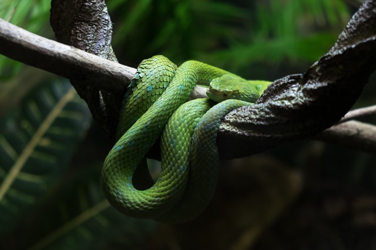

Top 10 Species Discovered in 2020 Include a Harry Potter Snake and Desert-Dwelling Broccoli
Recent news

More Renewable Energy Used in 2020 Than Fossil Fuels For the First Time in World’s 4th Largest Economy
World - Jan 18, 2021
Just Go Walk: Studies Show Normal Walking Can Add Years to Your Life and Reduce Disease Symptoms
Health - Jan 18, 2021

The Last Known Swinhoe’s Turtle on Earth Was Alone Until This Female Was Found – Researchers Hope for Babies
Animals - Jan 16, 2021
This Could Be Your Dream Job: Thousands Apply to Be Caretakers on Remote Irish Island
Leisure - Jan 15, 2021